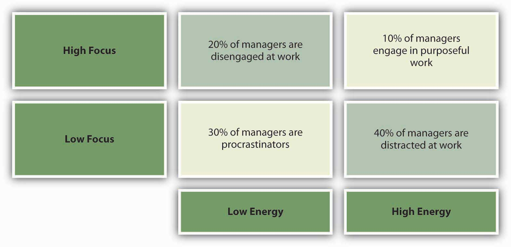
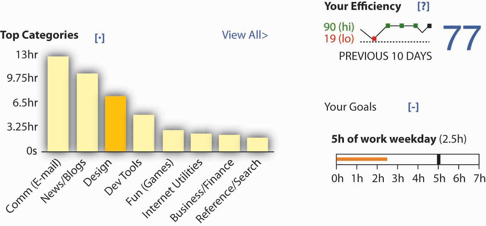
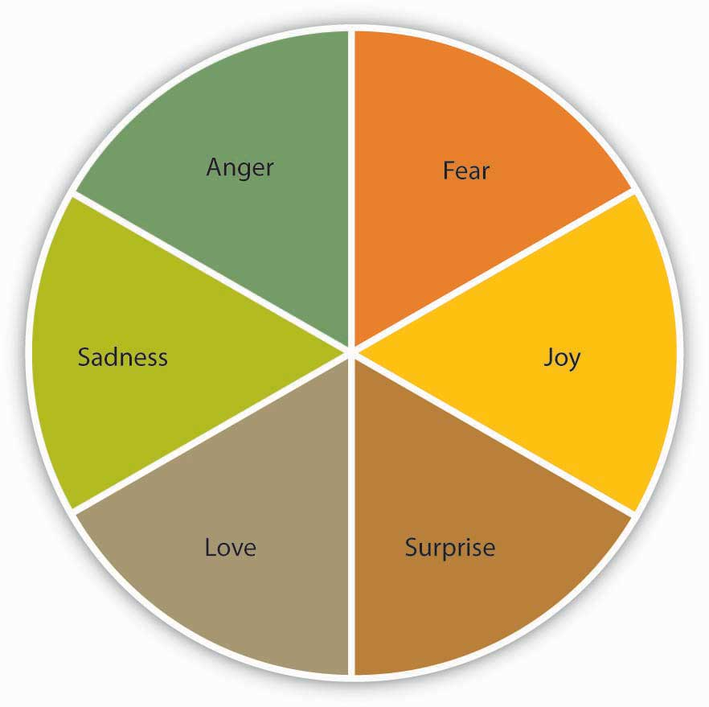
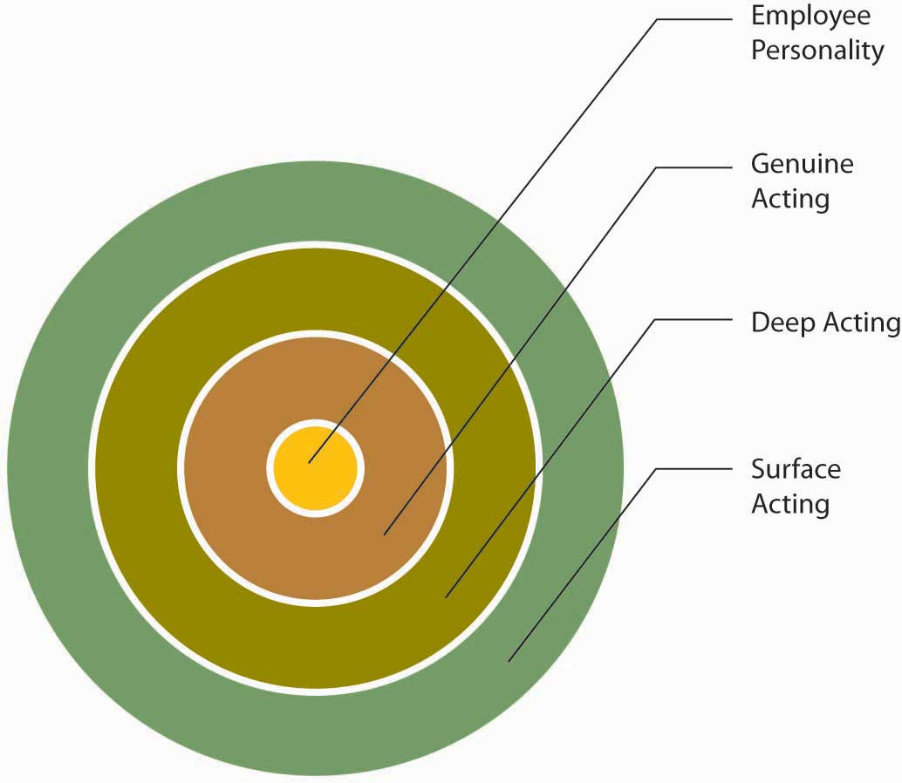
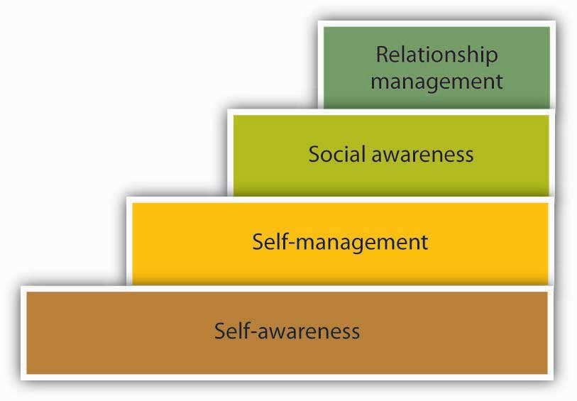
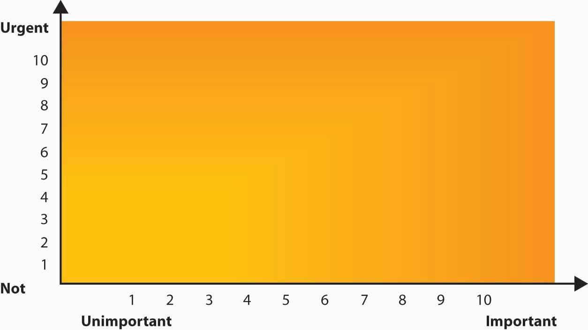

After reading this chapter, you should be able to do the following:
For the third year in a row, Camden Property Trust (NYSE: CPT) has been named one of Fortune magazine’s “100 Best Companies to Work For.” In 2010, the company went from 41 on the list to number 10. Established in 1982 and headquartered in Houston, Texas, Camden Property owns and develops multifamily residential apartment buildings. With 183 properties and 63,286 apartment homes, the real estate giant focuses its development on the fastest-growing markets in the United States. But like so many organizations in the real estate industry during the 2007 and 2008 subprime mortgage crises, business took a turn for the worst, and the company was faced with a substantial slowdown.
Camden realized that cuts would be inevitable and in 2009 announced that it would be reducing the number of planned development projects, which meant a 3% reduction of overall employees and a 50% cut of development staff. Camden’s organizational culture and motto is to “have fun.” Because the company understood the importance of honesty and open communication with its staff, a strong sense of mutual respect had been developed and cultivated well before the crisis, and as a result the company was able to maintain the trust of its employees during the difficult time.
Downsizing and layoffs are two of the most prevalent forms of stress at the workplace and if not handled properly can create severe psychological strain. Part of Camden’s success during the transition was the company’s ability to give staff the necessary information about the situation. Reinforcing the culture of fun at a past annual conference, the then CEO of Camden dressed as Captain Kirk from Star Trek and referred to the tough economic times as “attacks” on the company, and then he laid out a plan of action to bring about victory. Camden has found a way to successfully relate its organizational culture through various modes of communication.
The value and respect that Camden Property shows to its employees has carried over to the way it treats its customers. The company has discovered that doing the right thing makes good business sense. With the increase in foreclosures and unemployment, Camden is marketing to individuals in tough financial situations, a segment of the population once thought of as undesirable tenets. “We’ll forgive a foreclosure, as long as they didn’t totally blow up their credit,” says Camden CEO Richard Campo. The company has also created layoff-proof leases, which grant extensions to people and allow them extra time to come up with the rent. If a resident loses his or her job, the company will let them out of their lease without penalty or try to get them into a less expensive unit. Camden’s ability to build trust with both its employees and its customers during a period of extreme emotional stress ensures that the company will have a committed organization moving forward.
Case written by [citation redacted per publisher request]. Based on information from 100 best companies to work for. (2010, February 8). Fortune. Retrieved February 21, 2010, from http://money.cnn.com/magazines/fortune/bestcompanies/2010/full_list; Marino, V. (2008, March 23). A bright spot for housing investors? New York Times. Retrieved April 22, 2010, from http://www.nytimes.com/2008/03/23/realestate/23sqft.html?fta=y; Palmeri, C. (2009, March 16). Courting the foreclosed. BusinessWeek, p. 12; Thrash, R. (2009, December 11). Leasing agents use idea from car sales for renters. St. Petersburg Times, p. 3; Jones, B. (2009, December 28). REITs look to get back on track. Real Estate Finance and Investment; Caccamese, L. (2008). Managing under stress: How the Best Companies to Work For address staff reductions. Great Place to Work Institute. Retrieved February 21, 2009, from http://resources.greatplacetowork.com/article/pdf/managing-staff -reductions.pdf.
Gravity. Mass. Magnetism. These words come from the physical sciences. And so does the term stress. In its original form, the word stress relates to the amount of force applied to a given area. A steel bar stacked with bricks is being stressed in ways that can be measured using mathematical formulas. In human terms, psychiatrist Peter Panzarino notes, “Stress is simply a fact of nature—forces from the outside world affecting the individual.”Panzarino, P. (2008, February 15). Stress. Retrieved from Medicinenet.com. Retrieved May 21, 2008, from http://www.medicinenet.com/stress/article.htm. The professional, personal, and environmental pressures of modern life exert their forces on us every day. Some of these pressures are good. Others can wear us down over time.
StressThe body’s reaction to a change that requires a physical, mental, or emotional adjustment or response. is defined by psychologists as the body’s reaction to a change that requires a physical, mental, or emotional adjustment or response.Dyer, K. A. (2006). Definition of stress. Retrieved May 21, 2008, from About.com: http://dying.about.com/od/glossary/g/stress_distress.htm. Stress is an inevitable feature of life. It is the force that gets us out of bed in the morning, motivates us at the gym, and inspires us to work.
As you will see in the sections below, stress is a given factor in our lives. We may not be able to avoid stress completely, but we can change how we respond to stress, which is a major benefit. Our ability to recognize, manage, and maximize our response to stress can turn an emotional or physical problem into a resource.
Researchers use polling to measure the effects of stress at work. The results have been eye-opening. According to a 2001 Gallup poll, 80% of American workers report that they feel workplace stress at least some of the time.Kersten, D. (2002, November 12). Get a grip on job stress. USA Today. Retrieved May 21, 2008, from http://www.usatoday.com/money/jobcenter/workplace/stress management/2002-11-12-job-stress_x.htm. Another survey found that 65% of workers reported job stress as an issue for them, and almost as many employees ended the day exhibiting physical effects of stress, including neck pain, aching muscles, and insomnia. It is clear that many individuals are stressed at work.
Our basic human functions, breathing, blinking, heartbeat, digestion, and other unconscious actions, are controlled by our lower brains. Just outside this portion of the brain is the semiconscious limbic system, which plays a large part in human emotions. Within this system is an area known as the amygdala. The amygdalaThe area of the limbic system that controls fear type responses. is responsible for, among other things, stimulating fear responses. Unfortunately, the amygdala cannot distinguish between meeting a 10:00 a.m. marketing deadline and escaping a burning building.
Human brains respond to outside threats to our safety with a message to our bodies to engage in a “fight-or-flight” response.Cannon, W. (1915). Bodily changes in pain, hunger, fear and rage: An account of recent researches into the function of emotional excitement. New York: D. Appleton. Our bodies prepare for these scenarios with an increased heart rate, shallow breathing, and wide-eyed focus. Even digestion and other functions are stopped in preparation for the fight-or-flight response. While these traits allowed our ancestors to flee the scene of their impending doom or engage in a physical battle for survival, most crises at work are not as dramatic as this.
Hans Selye, one of the founders of the American Institute of Stress, spent his life examining the human body’s response to stress. As an endocrinologist who studied the effects of adrenaline and other hormones on the body, Selye believed that unmanaged stress could create physical diseases such as ulcers and high blood pressure, and psychological illnesses such as depression. He hypothesized that stress played a general role in disease by exhausting the body’s immune system and termed this the General Adaptation Syndrome (GAS)Hans Selye’s hypothesis that stress plays a general role in disease by exhausting the body’s immune system..Selye, H. (1946). The general adaptation syndrome and the diseases of adaptation. Journal of Clinical Endocrinology, 6, 117; Selye, H. (1976). Stress of life (Rev. ed.). New York: McGraw-Hill.
Figure 7.2

In Selye’s GAS model, stress affects an individual in three steps: alarm, resistance, and exhaustion.
In the alarm phaseWhen an outside stressor jolts the individual, insisting that something must be done. of stress, an outside stressor jolts the individual, insisting that something must be done. It may help to think of this as the fight-or-flight moment in the individual’s experience. If the response is sufficient, the body will return to its resting state after having successfully dealt with the source of stress.
In the resistance phaseWhen the body begins to release cortisol and draws on fats and sugar to find a way to adjust to the demands of stress., the body begins to release cortisol and draws on reserves of fats and sugars to find a way to adjust to the demands of stress. This reaction works well for short periods of time, but it is only a temporary fix. Individuals forced to endure the stress of cold and hunger may find a way to adjust to lower temperatures and less food. While it is possible for the body to “adapt” to such stresses, the situation cannot continue. The body is drawing on its reserves, like a hospital using backup generators after a power failure. It can continue to function by shutting down unnecessary items like large overhead lights, elevators, televisions, and most computers, but it cannot proceed in that state forever.
In the exhaustion phaseWhen the body has depleted its stores of sugars and fats, and the prolonged release of cortisol has caused the stressor to significantly weaken the individual., the body has depleted its stores of sugars and fats, and the prolonged release of cortisol has caused the stressor to significantly weaken the individual. Disease results from the body’s weakened state, leading to death in the most extreme cases. This eventual depletion is why we’re more likely to reach for foods rich in fat or sugar, caffeine, or other quick fixes that give us energy when we are stressed. Selye referred to stress that led to disease as distress and stress that was enjoyable or healing as eustress.
StressorsEvents or contexts that cause a stress reaction by elevating levels of adrenaline and forcing a physical or mental response. are events or contexts that cause a stress reaction by elevating levels of adrenaline and forcing a physical or mental response. The key to remember about stressors is that they aren’t necessarily a bad thing. The saying “the straw that broke the camel’s back” applies to stressors. Having a few stressors in our lives may not be a problem, but because stress is cumulative, having many stressors day after day can cause a buildup that becomes a problem. The American Psychological Association surveys American adults about their stresses annually. Topping the list of stressful issues are money, work, and housing.American Psychological Association. (2007, October 24). Stress a major health problem in the U.S., warns APA. Retrieved May 21, 2008, from the American Psychological Association Web site: http://www.apa.org/releases/stressproblem.html. But in essence, we could say that all three issues come back to the workplace. How much we earn determines the kind of housing we can afford, and when job security is questionable, home life is generally affected as well.
Understanding what can potentially cause stress can help avoid negative consequences. Now we will examine the major stressors in the workplace.
A major category of workplace stressors are role demands. In other words, some jobs and some work contexts are more potentially stressful than others.
Figure 7.3

George Lucas, one of the most successful filmmakers of all time, found making The Empire Strikes Back stressful both personally and financially. Those who worked with him on those early Star Wars films describe him as fully engrossed in the process, which led to role overload and work–family conflict. Following the making of that film, Lucas said he was “burnt out” and didn’t want to make any more Star Wars films.
Role ambiguityVagueness in relation to our job responsibilities. refers to vagueness in relation to what our responsibilities are. If you have started a new job and felt unclear about what you were expected to do, you have experienced role ambiguity. Having high role ambiguity is related to higher emotional exhaustion, more thoughts of leaving an organization, and lowered job attitudes and performance.Fisher, C. D., & Gittelson, R. (1983). A meta-analysis of the correlates of role conflict and role ambiguity. Journal of Applied Psychology, 68, 320–333; Jackson, S. E., & Shuler, R. S. (1985). A meta-analysis and conceptual critique of research on role ambiguity and role conflict in work settings. Organizational Behavior and Human Decision Processes, 36, 16–78; Örtqvist, D., & Wincent, J. (2006). Prominent consequences of role stress: A meta-analytic review. International Journal of Stress Management, 13, 399–422. Role conflictFacing contradictory demands at work. refers to facing contradictory demands at work. For example, your manager may want you to increase customer satisfaction and cut costs, while you feel that satisfying customers inevitably increases costs. In this case, you are experiencing role conflict because satisfying one demand makes it unlikely to satisfy the other. Role overloadHaving insufficient time and resources to complete one’s job. is defined as having insufficient time and resources to complete a job. When an organization downsizes, the remaining employees will have to complete the tasks that were previously performed by the laid-off workers, which often leads to role overload. Like role ambiguity, both role conflict and role overload have been shown to hurt performance and lower job attitudes; however, research shows that role ambiguity is the strongest predictor of poor performance.Gilboa, S., Shirom, A., Fried, Y., & Cooper, C. (2008). A meta-analysis of work demand stressors and job performance: Examining main and moderating effects. Personnel Psychology, 61, 227–271; Tubre, T. C., & Collins, J. M. (2000). Jackson and Schuler (1985) Revisited: A meta-analysis of the relationships between role ambiguity, role conflict, and performance. Journal of Management, 26, 155–169. Research on new employees also shows that role ambiguity is a key aspect of their adjustment, and that when role ambiguity is high, new employees struggle to fit into the new organization.Bauer, T. N., Bodner, T., Erdogan, B., Truxillo, D. M., & Tucker, J. S. (2007). Newcomer adjustment during organizational socialization: A meta-analytic review of antecedents, outcomes, and methods. Journal of Applied Psychology, 92, 707–721.
Messages reach us in countless ways every day. Some are societal—advertisements that we may hear or see in the course of our day. Others are professional—e-mails, memos, voice mails, and conversations from our colleagues. Others are personal—messages and conversations from our loved ones and friends. Add these together and it’s easy to see how we may be receiving more information than we can take in. This state of imbalance is known as information overloadInformation processing demands that exceed the supply or capacity of time available for such processing., which can be defined as “occurring when the information processing demands on an individual’s time to perform interactions and internal calculations exceed the supply or capacity of time available for such processing.”Schick, A. G., Gordon, L. A., & Haka, S. (1990). Information overload: A temporal approach. Accounting, organizations, and society, 15, 199–220. Role overload has been made much more salient because of the ease at which we can get abundant information from Web search engines and the numerous e-mail and text messages we receive each day.Definition of information overload available at PCMag.com. Retrieved May 21, 2008, from http://www.pcmag.com/encyclopedia_term/0,2542,t=information+overload &i=44950,00.asp; Additional information can be found in Dawley, D. D., & Anthony, W. P. (2003). User perceptions of e-mail at work. Journal of Business and Technical Communication, 17, 170–200. Other research shows that working in such a fragmented fashion significantly impacts efficiency, creativity, and mental acuity.Based on Overholt, A. (2001, February). Intel’s got (too much) mail. Fast Company. Retrieved May 22, 2008, from http://www.fastcompany.com/online/44/intel.html and http://blogs.intel.com/it/2006/10/information_overload.php.
As you can see, some of these jobs are stressful due to high emotional labor (customer service), physical demands (miner), time pressures (journalist), or all three (police officer).
Source: Tolison, B. (2008, April 7). Top ten most stressful jobs. Health. Retrieved January 28, 2009, from the WCTV News Web site: http://www.wctv.tv/news/headlines/17373899.html.
Work–family conflictWhen the demands from one’s work and family are negatively affecting one another. occurs when the demands from work and family are negatively affecting one another.Netemeyer, R. G., Boles, J. S., & McMurrian, R. (1996). Development and validation of work–family conflict and family–work conflict scales. Journal of Applied Psychology, 81, 400–410. Specifically, work and family demands on a person may be incompatible with each other such that work interferes with family life and family demands interfere with work life. This stressor has steadily increased in prevalence, as work has become more demanding and technology has allowed employees to work from home and be connected to the job around the clock. In fact, a recent census showed that 28% of the American workforce works more than 40 hours per week, creating an unavoidable spillover from work to family life.U.S. Census Bureau. (2004). Labor Day 2004. Retrieved May 22, 2008, from the U.S. Census Bureau Web site: http://www.census.gov/press-release/www/releases/archives/facts_for_features_special_editions/002264.html. Moreover, the fact that more households have dual-earning families in which both adults work means household and childcare duties are no longer the sole responsibility of a stay-at-home parent. This trend only compounds stress from the workplace by leading to the spillover of family responsibilities (such as a sick child or elderly parent) to work life. Research shows that individuals who have stress in one area of their life tend to have greater stress in other parts of their lives, which can create a situation of escalating stressors.Allen, T. D., Herst, D. E. L., Bruck, C. S., & Sutton, M. (2000). Consequences associated with work-to-family conflict: A review and agenda for future research. Journal of Occupational Health Psychology, 5, 278–308; Ford, M. T., Heinen, B. A., & Langkamer, K. L. (2007). Work and family satisfaction and conflict: A meta-analysis of cross-domain relations. Journal of Applied Psychology, 92, 57–80; Frone, M. R., Russell, R., & Cooper, M. L. (1992). Antecedents and outcomes of work–family conflict: Testing a model of the work–family interface. Journal of Applied Psychology, 77, 65–78; Hammer, L. B., Bauer, T. N., & Grandey, A. A. (2003). Work–family conflict and work–related withdrawal behaviors. Journal of Business & Psychology, 17, 419–436.
Work–family conflict has been shown to be related to lower job and life satisfaction. Interestingly, it seems that work–family conflict is slightly more problematic for women than men.Kossek, E. E., & Ozeki, C. (1998). Work–family conflict, policies, and the job–life satisfaction relationship: A review and directions for organizational behavior–human resources research. Journal of Applied Psychology, 83, 139–149. Organizations that are able to help their employees achieve greater work–life balance are seen as more attractive than those that do not.Barnett, R. C., & Hall, D. T. (2001). How to use reduced hours to win the war for talent. Organizational Dynamics, 29, 192–210; Greenhaus, J. H., & Powell, G. (2006). When work and family are allies: A theory of work–family enrichment. Academy of Management Review, 31, 72–92. Organizations can help employees maintain work–life balance by using organizational practices such as flexibility in scheduling as well as individual practices such as having supervisors who are supportive and considerate of employees’ family life.Thomas, L. T., & Ganster, D. C. (1995). Impact of family-supportive work variables on work–family conflict and strain: A control perspective. Journal of Applied Psychology, 80, 6–15.
Stress can result from positive and negative life changes. The Holmes-Rahe scale ascribes different stress values to life events ranging from the death of one’s spouse to receiving a ticket for a minor traffic violation. The values are based on incidences of illness and death in the 12 months after each event. On the Holmes-Rahe scale, the death of a spouse receives a stress rating of 100, getting married is seen as a midway stressful event, with a rating of 50, and losing one’s job is rated as 47. These numbers are relative values that allow us to understand the impact of different life events on our stress levels and their ability to impact our health and well-being.Fontana, D. (1989). Managing stress. Published by the British Psychology Society and Routledge. Again, because stressors are cumulative, higher scores on the stress inventory mean you are more prone to suffering negative consequences of stress than someone with a lower score.
Read each of the events listed below. Give yourself the number of points next to any event that has occurred in your life in the last 2 years. There are no right or wrong answers. The aim is just to identify which of these events you have experienced.
Table 7.1 Sample Items: Life Events Stress Inventory
| Life event | Stress points | Life event | Stress points |
|---|---|---|---|
| Death of spouse | 100 | Foreclosure of mortgage or loan | 30 |
| Divorce | 73 | Change in responsibilities at work | 29 |
| Marital separation | 65 | Son or daughter leaving home | 29 |
| Jail term | 63 | Trouble with in-laws | 29 |
| Death of close family member | 63 | Outstanding personal achievement | 28 |
| Personal injury or illness | 53 | Begin or end school | 26 |
| Marriage | 50 | Change in living location/condition | 25 |
| Fired or laid off at work | 47 | Trouble with supervisor | 23 |
| Marital reconciliation | 45 | Change in work hours or conditions | 20 |
| Retirement | 45 | Change in schools | 20 |
| Pregnancy | 40 | Change in social activities | 18 |
| Change in financial state | 38 | Change in eating habits | 15 |
| Death of close friend | 37 | Vacation | 13 |
| Change to different line of work | 36 | Minor violations of the law | 11 |
Scoring:
The happy events in this list such as getting married or an outstanding personal achievement illustrate how eustress, or “good stress,” can also tax a body as much as the stressors that constitute the traditionally negative category of distress. (The prefix eu- in the word eustress means “good” or “well,” much like the eu- in euphoria.) Stressors can also occur in trends. For example, during 2007, nearly 1.3 million U.S. housing properties were subject to foreclosure activity, up 79% from 2006.
Source: Adapted from Holmes, T. H., & Rahe, R. H. (1967). The social readjustment rating scale. Journal of Psychosomatic Research, 11, 213–218.
A study commissioned by the U.S. Department of Labor to examine over 3,600 companies from 1980 to 1994 found that manufacturing firms accounted for the greatest incidence of major downsizings. The average percentage of firms by industry that downsized more than 5% of their workforces across the 15-year period of the study was manufacturing (25%), retail (17%), and service (15%). A total of 59% of the companies studied fired at least 5% of their employees at least once during the 15-year period, and 33% of the companies downsized more than 15% of their workforce at least once during the period. Furthermore, during the recessions in 1985 to 1986 and 1990 to 1991, more than 25% of all firms, regardless of size, cut their workforce by more than 5%.Slocum, J. W., Morris, J. R., Cascio, W. F., & Young, C. E. (1999). Downsizing after all these years: Questions and answers about who did it, how many did it, and who benefited from it. Organizational Dynamics, 27, 78–88. In the United States, major layoffs in many sectors in 2008 and 2009 were stressful even for those who retained their jobs.
The loss of a job can be a particularly stressful event, as you can see by its high score on the life stressors scale. It can also lead to other stressful events, such as financial problems, which can add to a person’s stress score. Research shows that downsizing and job insecurity (worrying about downsizing) is related to greater stress, alcohol use, and lower performance and creativity.Moore, S., Grunberg, L., & Greenberg, E. (2004). Repeated downsizing contact: The effects of similar and dissimilar layoff experiences on work and well-being outcomes. Journal of Occupational Health Psychology, 9, 247–257; Probst, T. M., Stewart, S. M., Gruys, M. L., & Tierney, B. W. (2007). Productivity, counterproductivity and creativity: The ups and downs of job insecurity. Journal of Occupational and Organizational Psychology, 80, 479–497; Sikora, P., Moore, S., Greenberg, E., & Grunberg, L. (2008). Downsizing and alcohol use: A cross-lagged longitudinal examination of the spillover hypothesis. Work & Stress, 22, 51–68. For example, a study of over 1,200 Finnish workers found that past downsizing or expectations of future downsizing was related to greater psychological strain and absence.Kalimo, R., Taris, T. W., & Schaufeli, W. B. (2003). The effects of past and anticipated future downsizing on survivor well-being: An Equity perspective. Journal of Occupational Health Psychology, 8, 91–109. In another study of creativity and downsizing, researchers found that creativity and most creativity-supporting aspects of the perceived work environment declined significantly during the downsizing.Amabile, T. M., & Conti, R. (1999). Changes in the work environment for creativity during downsizing. Academy of Management Journal, 42, 630–640. Those who experience layoffs but have their self-integrity affirmed through other means are less susceptible to negative outcomes.Wiesenfeld, B. M., Brockner, J., Petzall, B., Wolf, R., & Bailey, J. (2001). Stress and coping among layoff survivors: A self-affirmation analysis. Anxiety, Stress & Coping: An International Journal, 14, 15–34.
The outcomes of stress are categorized into physiological and psychological and work outcomes.
Stress manifests itself internally as nervousness, tension, headaches, anger, irritability, and fatigue. Stress can also have outward manifestations. Dr. Dean Ornish, author of Stress, Diet and Your Heart, says that stress is related to aging.Ornish, D. (1984). Stress, diet and your heart. New York: Signet. Chronic stress causes the body to secrete hormones such as cortisol, which tend to make our complexion blemished and cause wrinkles. Harvard psychologist Ted Grossbart, author of Skin Deep, says, “Tens of millions of Americans suffer from skin diseases that flare up only when they’re upset.”Grossbart, T. (1992). Skin deep. New Mexico: Health Press. These skin problems include itching, profuse sweating, warts, hives, acne, and psoriasis. For example, Roger Smith, the former CEO of General Motors Corporation, was featured in a Fortune article that began, “His normally ruddy face is covered with a red rash, a painless but disfiguring problem which Smith says his doctor attributes 99% to stress.”Taylor, A. (1987, August 3). The biggest bosses. Fortune. Retrieved May 23, 2008, from http://money.cnn.com/magazines/fortune/fortune_archive/1987/08/03/69388/index.htm.
The human body responds to outside calls to action by pumping more blood through our system, breathing in a more shallow fashion, and gazing wide-eyed at the world. To accomplish this feat, our bodies shut down our immune systems. From a biological point of view, it’s a smart strategic move—but only in the short term. The idea can be seen as your body wanting to escape an imminent threat, so that there is still some kind of body around to get sick later. But in the long term, a body under constant stress can suppress its immune system too much, leading to health problems such as high blood pressure, ulcers, and being overly susceptible to illnesses such as the common cold.
The link between heart attacks and stress, while easy to assume, has been harder to prove. The American Heart Association notes that research has yet to link the two conclusively. Regardless, it is clear that individuals under stress engage in behaviors that can lead to heart disease such as eating fatty foods, smoking, or failing to exercise.
Depression and anxiety are two psychological outcomes of unchecked stress, which are as dangerous to our mental health and welfare as heart disease, high blood pressure, and strokes. The Harris poll found that 11% of respondents said their stress was accompanied by a sense of depression. “Persistent or chronic stress has the potential to put vulnerable individuals at a substantially increased risk of depression, anxiety, and many other emotional difficulties,” notes Mayo Clinic psychiatrist Daniel Hall-Flavin. Scientists have noted that changes in brain function—especially in the areas of the hypothalamus and the pituitary gland—may play a key role in stress-induced emotional problems.Mayo Clinic Staff. (2008, February 26). Chronic stress: Can it cause depression? Retrieved May 23, 2008, from the Mayo Clinic Web site: http://www.mayoclinic.com/health/stress/AN01286.
Stress is related to worse job attitudes, higher turnover, and decreases in job performance in terms of both in-role performance and organizational citizenship behaviors.Mayo Clinic Staff. (2008, February 26). Chronic stress: Can it cause depression? Retrieved May 23, 2008, from the Mayo Clinic Web site: http://www.mayoclinic.com/health/stress/AN01286; Gilboa, S., Shiron, A., Fried, Y., & Cooper, C. (2008). A meta-analysis of work demand stressors and job performance: Examining main and moderating effects. Personnel Psychology, 61, 227–271; Podsakoff, N. P., LePine, J. A., & LePine, M. A. (2007). Differential challenge stressor-hindrance stressor relationships with job attitudes, turnover intentions, turnover, and withdrawal behavior: A meta-analysis. Journal of Applied Psychology, 92, 438–454. Research also shows that stressed individuals have lower organizational commitment than those who are less stressed.Cropanzano, R., Rupp, D. E., & Byrne, Z. S. (2003). The relationship of emotional exhaustion to work attitudes, job performance, and organizational citizenship behaviors. Journal of Applied Psychology, 88, 160–169. Interestingly, job challenge has been found to be related to higher performance, perhaps with some individuals rising to the challenge.Podsakoff, N. P., LePine, J. A., & LePine, M. A. (2007). Differential challenge stressor-hindrance stressor relationships with job attitudes, turnover intentions, turnover, and withdrawal behavior: A meta-analysis. Journal of Applied Psychology, 92, 438–454. The key is to keep challenges in the optimal zone for stress—the activation stage—and to avoid the exhaustion stage.Quick, J. C., Quick, J. D., Nelson, D. L., & Hurrell, J. J. (1997). Preventative stress management in organizations. Washington, DC: American Psychological Association.
Figure 7.4

Individuals who are able to find the right balance between work that is too challenging and work that is not challenging enough see increases in performance.
How we handle stress varies by individual, and part of that issue has to do with our personality type. Type A personalitiesPeople who display high levels of speed/impatience, job involvement, and hard-driving competitiveness., as defined by the Jenkins Activity Survey,Jenkins, C. D., Zyzanski, S., & Rosenman, R. (1979). Jenkins activity survey manual. New York: Psychological Corporation. display high levels of speed/impatience, job involvement, and hard-driving competitiveness. If you think back to Selye’s General Adaptation Syndrome, in which unchecked stress can lead to illness over time, it’s easy to see how the fast-paced, adrenaline-pumping lifestyle of a Type A person can lead to increased stress, and research supports this view.Spector, P. E., & O’Connell, B. J. (1994). The contribution of personality traits, negative affectivity, locus of control and Type A to the subsequent reports of job stressors and job strains. Journal of Occupational and Organizational Psychology, 67, 1–11. Studies show that the hostility and hyper-reactive portion of the Type A personality is a major concern in terms of stress and negative organizational outcomes.Ganster, D. C. (1986). Type A behavior and occupational stress. Journal of Organizational Behavior Management, 8, 61–84.
Type B personalitiesPeople who tend to be calmer than Type A people, and tend to think through situations as opposed to reacting emotionally., by contrast, are calmer by nature. They think through situations as opposed to reacting emotionally. Their fight-or-flight and stress levels are lower as a result. Our personalities are the outcome of our life experiences and, to some degree, our genetics. Some researchers believe that mothers who experience a great deal of stress during pregnancy introduce their unborn babies to high levels of the stress-related hormone cortisol in utero, predisposing their babies to a stressful life from birth.BBC News. (2007, January 26). Stress “harms brain in the womb.” Retrieved May 23, 2008, from http://news.bbc.co.uk/2/hi/health/6298909.stm.
Men and women also handle stress differently. Researchers at Yale University discovered estrogen may heighten women’s response to stress and their tendency to depression as a result.Weaver, J. (2004, January 21). Estrogen makes the brain more vulnerable to stress. Yale University Medical News. Retrieved May 23, 2008, from http://www.eurekalert.org/pub_releases/2004-01/yu-emt012104.php. Still, others believe that women’s stronger social networks allow them to process stress more effectively than men.Personality types impact on response to stress. (n.d.). Retrieved June 5, 2008, from the Discovery Health Web site: http://health.discovery.com/centers/stress/articles/pnstress/pnstress.html. So while women may become depressed more often than men, women may also have better tools for countering emotion-related stress than their male counterparts.
As we all know, stress can build up. Advice that’s often given is to "let it all out" with something like a cathartic "good cry." But research shows that crying may not be as helpful as the adage would lead us to believe. In reviewing scientific studies done on crying and health, Ad Vingerhoets and Jan Scheirs found that the studies “yielded little evidence in support of the hypothesis that shedding tears improves mood or health directly, be it in the short or in the long run.” Another study found that venting actually increased the negative effects of negative emotion.Brown, S. P., Westbrook, R. A., & Challagalla, G. (2005). Good cope, bad cope: Adaptive and maladaptive coping strategies following a critical negative work event. Journal of Applied Psychology, 90, 792–798.
Instead, laughter may be the better remedy. Crying may actually intensify the negative feelings, because crying is a social signal not only to others but to yourself. “You might think, ‘I didn’t think it was bothering me that much, but look at how I’m crying—I must really be upset,’” says Susan Labott of the University of Toledo. The crying may make the feelings more intense. Labott and Randall Martin of Northern Illinois University at Dekalb surveyed 715 men and women and found that at comparable stress levels, criers were more depressed, anxious, hostile, and tired than those who wept less. Those who used humor were the most successful at combating stress. So, if you’re looking for a cathartic release, opt for humor instead: Try to find something funny in your stressful predicament.
Sources: Vingerhoets, A. J. J. M., & Scheirs, J. G. M. (2001). Crying and health. In A. J. J. M. Vingerhoets & R. R. Cornelius (Eds.), Adult crying: A biopsychosocial approach (pp. 227–247). East Sussex, UK: Brunner-Routledge; Martin, R., & Susan L. (1991). Mood following emotional crying: Effects of the situation. Journal of Research in Personality, 25(2), 218–233; Bostad, R. The crying game. Anchor Point, 1–8. Retrieved June 19, 2008, from http://www.nlpanchorpoint.com/BolstadCrying1481.pdf
Stress is prevalent in today’s workplaces. The General Adaptation Syndrome consists of alarm, resistance, and eventually exhaustion if the stress goes on for too long. Time pressure is a major stressor. Outcomes of stress include both psychological and physiological problems as well as work outcomes. Individuals with Type B personalities are less prone to stress. In addition, individuals with social support experience less stress.
Luckily, there are several ways to manage stress. One way is to harness stress’s ability to improve our performance. Jack Groppel was working as a professor of kinesiology and bioengineering at the University of Illinois when he became interested in applying the principles of athletic performance to workplace performance. Could eating better, exercising more, and developing a positive attitude turn distress into eustress? Groppel’s answer was yes. If professionals trained their minds and bodies to perform at peak levels through better nutrition, focused training, and positive action, Groppel said, they could become “corporate athletes” working at optimal physical, emotional, and mental levels.
The “corporate athlete” approach to stress is a proactive (action first) rather than a reactive (response-driven) approach. While an overdose of stress can cause some individuals to stop exercising, eat less nutritional foods, and develop a sense of hopelessness, corporate athletes ward off the potentially overwhelming feelings of stress by developing strong bodies and minds that embrace challenges, as opposed to being overwhelmed by them.
Turning stress into fuel for corporate athleticism is one way of transforming a potential enemy into a workplace ally. Another way to transform stress is by breaking challenges into smaller parts, and embracing the ones that give us joy. In doing so, we can enter a state much like that of a child at play, fully focused on the task at hand, losing track of everything except our genuine connection to the challenge before us. This concept of total engagement in one’s work, or in other activities, is called flowA state of consciousness in which a person is totally absorbed in an activity.. The term flow was coined by psychologist Mihaly Csikszentmihalyi and is defined as a state of consciousness in which a person is totally absorbed in an activity. We’ve all experienced flow: It’s the state of mind in which you feel strong, alert, and in effortless control.
Figure 7.5
A key to flow is engaging at work, yet research shows that most managers do not feel they are engaged in purposeful work.
Sources: Adapted from information in Bruch, H., & Ghoshal, S. (2002, February). Beware the busy manager. Harvard Business Review, 80, 62–69; Schiuma, G., Mason, S., & Kennerley, M. (2007). Assessing energy within organizations. Measuring Business Excellence, 11, 69–78.
According to this way of thinking, the most pleasurable way for a person to work is in harmony with his or her true interests. Work is seen as more similar to playing games than most activities adults do. This is because work consists of tasks, puzzles, surprises, and potentially rewarding challenges. By breaking down a busy workday into smaller pieces, individuals can shift from the “stress” of work to a more engaged state of flow.
Keep in mind that work that flows includes the following:
Corporate athleticism and flow are two concepts that can help you cope with stress. Next, let us focus more on exactly how individual lifestyle choices affect our stress levels. Eating well, exercising, getting enough sleep, and employing time management techniques are all things we can affect that can decrease our feelings of stress.
Greasy foods often make a person feel tired. Why? Because it takes the body longer to digest fats, which means the body is diverting blood from the brain and making you feel sluggish. Eating big, heavy meals in the middle of the day may actually slow us down, because the body will be pumping blood to the stomach, away from the brain. A better choice for lunch might be fish, such as wild salmon. Fish keeps you alert because of its effect on two important brain chemicals—dopamine and norepinephrine—which produce a feeling of alertness, increased concentration, and faster reaction times.Wurtman, J. (1988). Managing your mind and mood through food. New York: Harper Perennial.
Exercise is another strategy for managing stress. The best kind of break to take may be a physically active one. Research has shown that physically active breaks lead to enhanced mental concentration and decreased mental fatigue. One study, conducted by Belgian researchers, examined the effect of breaks on workers in a large manufacturing company. One-half of the workers were told to rest during their breaks. The other half did mild calisthenics. Afterward, each group was given a battery of tests. The group who had done the mild calisthenics scored far better on all measures of memory, decision-making ability, eye–hand coordination, and fine motor control.Miller, P. M. (1986). Hilton head executive stamina program. New York: Rawson Associates.
Strange as it may seem, exercise gives us more energy. How energetic we feel depends on our maximum oxygen capacity (the total amount of oxygen we utilize from the air we breathe). The more oxygen we absorb in each breath, the more energy and stamina we will have. Yoga and meditation are other physical activities that are helpful in managing stress. Regular exercise increases our body’s ability to draw more oxygen out of the air we breathe. Therefore, taking physically active breaks may be helpful in combating stress.
It is a vicious cycle. Stress can make it hard to sleep. Not sleeping makes it harder to focus on work in general, as well as on specific tasks. Tired folks are more likely to lose their temper, upping the stress level of others. American insomnia is a stress-related epidemic—one-third of adults claim to have trouble sleeping and 37% admit to actually having fallen asleep while driving in the past year.Tumminello, L. (2007, November 5). The National Sleep Foundation’s State of the States Report on Drowsy Driving finds fatigued driving to be under-recognized and underreported. Retrieved May 23, 2008, from the National Sleep Foundation Web site: http://www.drowsydriving.org/site/c.lqLPIROCKtF/b.3568679/.
The work–life crunch experienced by many Americans makes a good night’s sleep seem out of reach. According to the journal Sleep, workers who suffer from insomnia are more likely to miss work due to exhaustion. These missed days ultimately cost employers thousands of dollars per person in missed productivity each year, which can total over $100 billion across all industries.For additional resources, go to the National Sleep Foundation Web site: http://www.nationalsleepfoundation.org. As you might imagine, a person who misses work due to exhaustion will return to work to find an even more stressful workload. This cycle can easily increase the stress level of a work team as well as the overtired individual.
A consistent finding is that those individuals who have a strong social support network are less stressed than those who do not.Halbesleben, J. R. B. (2006). Sources of social support and burnout: A meta-analytic test of the conservation of resources model. Journal of Applied Psychology, 91, 1134–1145. Research finds that social support can buffer the effects of stress.Van Yperfen, N. W., & Hagedoorn, M. (2003). Do high job demands increase intrinsic motivation or fatigue or both? The role of job control and job social support. Academy of Management Journal, 46, 339–348. Individuals can help build up social support by encouraging a team atmosphere in which coworkers support one another. Just being able to talk with and listen to others, either with coworkers at work or with friends and family at home, can help decrease stress levels.
Time managementDefined as the development of tools or techniques that help to make us more productive when we work. is defined as the development of tools or techniques that help to make us more productive when we work. Effective time management is a major factor in reducing stress, because it decreases much of the pressure we feel. With information and role overload it is easy to fall into bad habits of simply reacting to unexpected situations. Time management techniques include prioritizing, manageable organization, and keeping a schedule such as a paper or electronic organizing tool. Just like any new skill, developing time management takes conscious effort, but the gains might be worthwhile if your stress level is reduced.
Check out this interview with Fast Company and Tony Wright, CEO of RescueTime, who has created a tool to evaluate your productivity using data from your computer.
http://www.fastcompany.tv/video/see-how-much-tme-you-are-wasting-with-RescueTime
This software is available at http://www.RescueTime.com/ and is currently free to use.
Figure 7.7
This is an example of output from a RescueTime user.
Source: Used by permission from RescueTime.
Stress-related issues cost businesses billions of dollars per year in absenteeism, accidents, and lost productivity.Hobson, C., Kesic, D., Rosetti, D., Delunas, L., & Hobson, N. (2004, September). Motivating employee commitment with empathy and support during stressful life events. International Journal of Management Web site. Retrieved January 21, 2008 from http://findarticles.com/p/articles/mi_qa5440/is_200409/ai_n21362646?tag=content;col1. As a result, managing employee stress is an important concern for organizations as well as individuals. For example, Renault, the French automaker, invites consultants to train their 2,100 supervisors to avoid the outcomes of negative stress for themselves and their subordinates. IBM Corporation encourages its worldwide employees to take an online stress assessment that helps them create action plans based on their results. Even organizations such as General Electric Company (GE) that are known for a “winner takes all” mentality are seeing the need to reduce stress. Lately, GE has brought in comedians to lighten up the workplace atmosphere, and those receiving low performance ratings are no longer called the “bottom 10s” but are now referred to as the “less effectives.”Dispatches from the war on stress: Business begins to reckon with the enormous costs of workplace angst. (2007, August 6). Business Week. Retrieved May 23, 2008, from http://www.businessweek.com/magazine/content/07_32/b4045061.htm? campaign_id=rss_null. Organizations can take many steps to helping employees with stress, including having more clear expectations of them, creating jobs where employees have autonomy and control, and creating a fair work environment. Finally, larger organizations normally utilize outside resources to help employees get professional help when needed.
One way to reduce stress is to state your expectations clearly. Workers who have clear descriptions of their jobs experience less stress than those whose jobs are ill defined.Jackson, S. E., & Schuler, R. S. (1985). A meta-analysis and conceptual critique of research on role ambiguity and role conflict in work settings. Organizational Behavior and Human Decision Processes, 36, 16–78; Sauter S. L., Murphy L. R., & Hurrell J. J., Jr. (1990). Prevention of work-related psychological disorders. American Psychologist, 45, 1146–1158. The same thing goes for individual tasks. Can you imagine the benefits of working in a place where every assignment was clear and employees were content and focused on their work? It would be a great place to work as a manager, too. Stress can be contagious, but as we’ve seen above, this kind of happiness can be contagious, too. Creating clear expectations doesn’t have to be a top–down event. Managers may be unaware that their directives are increasing their subordinates’ stress by upping their confusion. In this case, a gentle conversation that steers a project in a clearer direction can be a simple but powerful way to reduce stress. In the interest of reducing stress on all sides, it’s important to frame situations as opportunities for solutions as opposed to sources of anger.
Giving employees a sense of autonomy is another thing that organizations can do to help relieve stress.Kossek, E. E., Lautschb, B. A., & Eaton, S. C. (2006). Telecommuting, control, and boundary management: Correlates of policy use and practice, job control, and work–family effectiveness. Journal of Vocational Behavior, 68, 347–367. It has long been known that one of the most stressful things that individuals deal with is a lack of control over their environment. Research shows that individuals who feel a greater sense of control at work deal with stress more effectively both in the United States and in Hong Kong.Schaubroeck, J., Lam, S. S. K., & Xie, J. L. (2000). Collective efficacy versus self-efficacy in coping responses to stressors and control: A cross-cultural study. Journal of Applied Psychology, 85, 512–525. Similarly, in a study of American and French employees, researchers found that the negative effects of emotional labor were much less for those employees with the autonomy to customize their work environment and customer service encounters.Grandey, A. A., Fisk, G. M., & Steiner, D. D. (2005). Must “service with a smile” be stressful? The moderating role of personal control for American and French employees. Journal of Applied Psychology, 90, 893–904. Employees’ stress levels are likely to be related to the degree that organizations can build autonomy and support into jobs.
Work environments that are unfair and unpredictable have been labeled “toxic workplaces.” A toxic workplace is one in which a company does not value its employees or treat them fairly.Webber, A. M. (1998). Danger: Toxic company. Fast Company. Retrieved June 1, 2008, from http://www.fastcompany.com/magazine/19/toxic.html?page=0%2C1. Statistically, organizations that value employees are more profitable than those that do not.Huselid, M. A. (1995). The impact of human resource management practices on turnover, productivity, and corporate financial performance. Academy of Management Journal, 38, 635–672; Pfeffer, J. (1998). The human equation: Building profits by putting people first. Boston: Harvard Business School Press; Pfeffer, J., & Veiga, J. F. (1999). Putting people first for organizational success. Academy of Management Executive, 13, 37–48; Welbourne, T., & Andrews, A. (1996). Predicting performance of Initial Public Offering firms: Should HRM be in the equation? Academy of Management Journal, 39, 910–911. Research shows that working in an environment that is seen as fair helps to buffer the effects of stress.Judge, T. A., & Colquitt, J. A. (2004). Organizational justice and stress: The mediating role of work-family conflict. Journal of Applied Psychology, 89, 395–404. This reduced stress may be because employees feel a greater sense of status and self-esteem or due to a greater sense of trust within the organization. These findings hold for outcomes individuals receive as well as the process for distributing those outcomes.Greenberg, J. (2004). Stress fairness to fare no stress: Managing workplace stress by promoting organizational justice. Organizational Dynamics, 33, 352–365. Whatever the case, it is clear that organizations have many reasons to create work environments characterized by fairness, including lower stress levels for employees. In fact, one study showed that training supervisors to be more interpersonally sensitive even helped nurses feel less stressed about a pay cut.Greenberg, J. (2006). Losing sleep over organizational justice: Attenuating insomniac reactions to underpayment inequity with supervisory training in interactional justice. Journal of Applied Psychology, 91, 58–69.
Think of your current or most recent supervisor and rate each of the following items in terms of this person’s behavior toward you.
Answer the following questions using 1 = not at all, 2 = somewhat, 3 = fully agree
| 1. | _____ | My supervisor is willing to listen to my problems in juggling work and nonwork life. |
| 2. | _____ | My supervisor takes the time to learn about my personal needs. |
| 3. | _____ | My supervisor makes me feel comfortable talking to him or her about my conflicts between work and nonwork. |
| 4. | _____ | My supervisor and I can talk effectively to solve conflicts between work and nonwork issues. |
| 5. | _____ | I can depend on my supervisor to help me with scheduling conflicts if I need it. |
| 6. | _____ | I can rely on my supervisor to make sure my work responsibilities are handled when I have unanticipated nonwork demands. |
| 7. | _____ | My supervisor works effectively with workers to creatively solve conflicts between work and nonwork. |
| 8. | _____ | My supervisor is a good role model for work and nonwork balance. |
| 9. | _____ | My supervisor demonstrates effective behaviors in how to juggle work and nonwork balance. |
| 10. | _____ | My supervisor demonstrates how a person can jointly be successful on and off the job. |
| 11. | _____ | My supervisor thinks about how the work in my department can be organized to jointly benefit employees and the company. |
| 12. | _____ | My supervisor asks for suggestions to make it easier for employees to balance work and nonwork demands. |
| 13. | _____ | My supervisor is creative in reallocating job duties to help my department work better as a team. |
| 14. | _____ | My supervisor is able to manage the department as a whole team to enable everyone’s needs to be met. |
Add up all your ratings to see how your supervisor stacks up.
Score total = _______________
Scoring:
Adapted from Hammer, L. B., Kossek, E. E., Yragui, N. L., Bodner, T. E., & Hanson, G. C. (in press). Development and validation of a multidimensional measure of family supportive supervisor behaviors (FSSB). Journal of Management. DOI: 10.1177/0149206308328510. Used by permission of Sage Publications.
TelecommutingWorking remotely such as from home or from a coffee shop for some portion of the workweek. refers to working remotely. For example, some employees work from home, a remote satellite office, or from a coffee shop for some portion of the workweek. Being able to work away from the office is one option that can decrease stress for some employees. Of course, while an estimated 45 million individuals telecommute each year, telecommuting is not for everyone.WorldatWork. (2006). Telework trendlines for 2006 (Report). Retrieved June 1, 2008, from the WorldatWork Web site: http://www.workingfromanywhere.org/news/trendlines_2006.pdf. At Merrill Lynch & Co. Inc., those who are interested in telecommuting are put through a rigorous training program that includes 2 weeks in one of their three home office simulation labs in Florida, New Jersey, or Manhattan to see if telecommuting is a good fit for the employee. Employees must also submit photos of their home office and a work plan. AT&T Inc. estimates that nearly 55% of its U.S.-based managers telecommute at some point in the week, and this method is also popular with managers around the world.AT&T. (2004). Remote working increasing across enterprises, according to global survey of senior executives. Retrieved June 1, 2008, from the AT&T Web site: http://www.business.att.com/enterprise/resource_item/Insights/Press_Release/20041201-1/download=yes&year=2004/; Wells, S. J. (1997, August 17). For stay-home workers, speed bumps on the telecommute. New York Times, p. 17. A recent survey found that 43% of government workers now telecommute at least part time. This trend has been growing in reaction to a law passed by the U.S. Congress in 2000 requiring federal agencies to offer working from home as an option.Gross, G. (2008, March 6). Survey: More U.S. government employees teleworking. InfoWorld. Retrieved June 1, 2008, from http://www.infoworld.com/article/06/03/06/76150_HNtelework_1.html?BUSINESS%20ANALYTICS. Merrill Lynch has seen higher productivity, less stress, lower turnover, and higher job satisfaction for those who telecommute.Chadderdon, L. (2007). Merrill Lynch works—at home. Fast Company. Retrieved June 1, 2008, from http://www.fastcompany.com/magazine/14/homework.html. A recent meta-analysis of all the studies of telecommuting (12,883 employees) confirmed researcher findings that the higher autonomy of working from home resulted in lower work–family conflict for these employees. Even more encouraging were the findings of higher job satisfaction, better performance, and lower stress as well.Gajendran, R. S., & Harrison, D. A. (2007). The good, the bad, and the unknown about telecommuting: Meta-analysis of psychological mediators and individual consequences. Journal of Applied Psychology, 92, 1524–1541. Of course, telecommuting can also cause potential stress. The keys to successful telecommuting arrangements are to match the right employees with the right jobs to the right environments. If any variable is not within a reasonable range, such as having a dog that barks all day when the employee is at home, productivity will suffer.
SabbaticalsPaid time off from a normal work routine. (paid time off from the normal routine at work) have long been a sacred ritual practiced by universities to help faculty stay current, work on large research projects, and recharge every 5 to 8 years. However, many companies such as Genentech Inc., Container Store Inc., and eBay Inc. are now in the practice of granting paid sabbaticals to their employees. While 11% of large companies offer paid sabbaticals and 29% offer unpaid sabbaticals, 16% of small companies and 21% of medium-sized companies do the same.Schwartz, S. K. (1999, November 15). The corporate sabbatical. CNNMoney.com. Retrieved June 1, 2008, from http://money.cnn.com/1999/11/15/life/q_sabbatical/. For example, at PricewaterhouseCoopers International Ltd., you can apply for a sabbatical after just 2 years on the job if you agree to stay with the company for at least 1 year following your break. Time off ranges from 3 to 6 months and entails either a personal growth plan or one for social services where you help others.Sahadi, J. (2006, June 13). The corporate sabbatical isn't just a pipe dream at a significant minority of companies. CNNMoney.com. Retrieved June 1, 2008, from http://money.cnn.com/2006/06/13/commentary/everyday/sahadi/index.htm.
There are times when life outside work causes stress in ways that will impact our lives at work and beyond. These situations may include the death of a loved one, serious illness, drug and alcohol dependencies, depression, or legal or financial problems that are impinging on our work lives. Although treating such stressors is beyond the scope of an organization or a manager, many companies offer their employees outside sources of emotional counseling. Employee Assistance Programs (EAPs)Often offered to workers as an adjunct to a company-provided health care plan. are often offered to workers as an adjunct to a company-provided health care plan. Small companies in particular use outside employee assistance programs, because they don’t have the needed expertise in-house. As their name implies, EAPs offer help in dealing with crises in the workplace and beyond. EAPs are often used to help workers who have substance abuse problems.
There are many individual and organizational approaches to decreasing stress and avoiding negative outcomes. Individuals can control their diet, exercise, and sleep routines; build a social support network; and practice better time management. Organizations can help make expectations clear, give employees autonomy, create fair work environments, consider telecommuting, give employee sabbaticals, and utilize employee assistance programs.
Financial analysts measure the value of a company in terms of profits and stock. For employees, however, the value of a job is also emotional. The root of the word emotion comes from a French term meaning “to stir up.” And that’s a great place to begin our investigation of emotions at work. More formally, an emotionFeeling that occurs quickly and profoundly in response to an event that is desired (positive) or undesired (negative). is defined as a short, intense feeling resulting from some event. Not everyone reacts to the same situation in the same way. For example, a manager’s way of speaking can cause one person to feel motivated, another to feel angry, and a third to feel sad. Emotions can influence whether a person is receptive to advice, whether they quit a job, and how they perform individually or on a team.Cole, M. S., Walter, F., & Bruch, H. (2008). Affective mechanisms linking dysfunctional behavior to performance in work teams: A moderated mediation study. Journal of Applied Psychology, 93, 945–958; George, J. M, & Jones, G. R. (1996). The experience of work and turnover intentions: Interactive effects of value attainment, job satisfaction, and positive mood. Journal of Applied Psychology, 81, 318–325; Gino, F., & Schweitzer, M. E. (2008). Blinded by anger or feeling the love: How emotions influence advice taking. Journal of Applied Psychology, 93, 1165–1173. Of course, as you know, emotions can be positive or negative.
Positive emotionsEmotions such as joy, love, and surprise can result from desired events. such as joy, love, and surprise result from our reaction to desired events. In the workplace, these events may include achieving a goal or receiving praise from a superior. Individuals experiencing a positive emotion may feel peaceful, content, and calm. A positive feeling generates a sensation of having something you didn’t have before. As a result, it may cause you to feel fulfilled and satisfied. Positive feelings have been shown to dispose a person to optimism, and a positive emotional state can make difficult challenges feel more achievable.Kirby, L. (2001). Personality, physiology and performance: The effects of optimism on task engagement. Retrieved June 1, 2008, from University of Pennsylvania, Positive Psychology Center Web site: http://www.ppc.sas.upenn.edu/institute2001 shortsummaries.htm#LK. This is because being positive can lead to upward positive spirals where your good mood brings about positive outcomes, thereby reinforcing the good mood.Frederickson, B. L., & Joiner, T. (2002). Emotions trigger upward spirals toward emotional well-being. Psychological Science, 13, 172–175.
Emotions are also useful for creative tasks, because positive individuals tend to be more creative and open to new ideas. In addition to helping with employee creativity, companies such as Microsoft Corporation often want to understand which features of their products produce not just high ratings for usability but also high emotional ratings. Individuals with strong positive emotional reactions are more likely to use their product and recommend it to others.Weler, M. H. (2008). Microsoft gets emotional with business software upgrade. Information Week. Retrieved June 1, 2008, from http://www.informationweek.com/news/windows/microsoft_news/showArticle.jhtml?articleID=206903128. This is something Apple Inc. has been known for doing well, as their products tend to evoke strong positive emotions and loyalty from their users.
Figure 7.10
By creating products that users feel an emotional reaction to, Apple has revolutionized the way music is experienced.
Negative emotionsEmotions such as anger, fear, and sadness can result from undesired events. such as anger, fear, and sadness can result from undesired events. In the workplace, these events may include not having your opinions heard, a lack of control over your day-to-day environment, and unpleasant interactions with colleagues, customers, and superiors. Negative emotions play a role in the conflict process, with those who can manage their negative emotions finding themselves in fewer conflicts than those who do not.
The unwanted side effects of negative emotions at work are easy to see: An angry colleague is left alone to work through the anger; a jealous colleague is excluded from office gossip, which is also the source of important office news. But you may be surprised to learn that negative emotions can help a company’s productivity in some cases. Anger at another company’s success, for example, can spark a burst of positive effort on behalf of a competitor. Jealousy about another division’s sales figures may inspire a rival division to work harder. While negative emotions can be destructive in the workplace, they can inspire bursts of valuable individual action to change situations that aren’t working the way they should.Jordan, P. J., Lawrence, S. A., & Troth, A. C. (2006). Emotions and coping with conflict: An introduction. Journal of Management and Organization, 12, 98–100. The key is to promote the positive emotions and work to manage the negative ones so they don’t spread throughout the organization and become the norm.
Both positive and negative emotions can be contagious, with the spillover of negative emotions lasting longer than positive emotions.Linguistics may be clue to emotions, according to Penn State research. (2005, January 24). Retrieved June 1, 2008, from the ScienceDaily Web site: http://www.sciencedaily.com_/releases/2005/01/050123213111.htm. As you may have experienced in the past, contagion can be especially salient in a team setting. Research shows that emotions are contagious and that team members affect one another even after accounting for team performance.Ilies, R., Wagner, D. T., & Morgeson, F. P. (2007). Explaining affective linkages in teams: Individual differences in susceptibility to contagion and individualism-collectivism. Journal of Applied Psychology, 92, 1140–1148. One explanation for negative emotions’ tendency to linger may be a stronger connection to the fight-or-flight situations people experience. Anger, fear, and suspicion are intentionally unpleasant messages urging us to take action immediately. And to make sure we get the message, these emotions stick around.
Research shows that some people are more susceptible to emotional contagion than others.Papousek, I., Freudenthaler, H. H., & Schulter, D. (2008). The interplay of perceiving and regulating emotions in becoming infected with positive and negative moods. Personality and Individual Differences, 45, 463–467. But in general, when the boss is happy, the staff is happy.Bono, J. E., & Ilies, R. (2006). Charisma, positive emotions and mood contagion. Leadership Quarterly, 17, 317–334. We can also imagine how negative emotions can be transferred. Imagine you’re working behind the counter at a fast-food restaurant. Your mood is fine, until a customer argues with you about an order. You argue back. The customer leaves in a huff. Your anger emotions continue, turning into negative feelings that last throughout the day. As you might guess, you are more likely to make mistakes and find ordinary challenges annoying when you’re experiencing negative emotions. Unchecked, your negative emotions can spread to those around you. A negative interaction with one customer can spill over onto interactions with another customer.Pugh, S. D. (2001). Service with a smile: Emotional contagion in the service encounter. Academy of Management Journal, 44, 1018–1027; Hareli, S., & Rafaeli, A. (2007). Emotion cycles: On the social influence of emotion in organizations. Research in Organizational Behavior, 28, 35–59.
Olympic athletes train for peak performance by stimulating their brains to believe they’ve just run a record race. You can do the same thing to experience different moods. By providing your brain with the external stimulus of happiness or sadness, you can create those feelings. Give it a try!
It’s best to practice this when you are feeling relatively calm. To give yourself a neutral starting point, close your eyes and breathe in slowly. Now, release your breath. Open your eyes and smile wide. Allow your eyes to crinkle. Now smile a bit more.
The changes you have consciously made to your expression are signaling your body that a positive event has taken place. How does this affect you emotionally?
Answer these questions to find out:
Do you feel more or less energetic as you smile? More or less calm? More or less optimistic? How does the feeling resulting from your physical changes compare with your feelings a moment before?
Now, let’s try the opposite: Close your eyes and breathe in and out slowly, as detailed above, to clear your “emotional slate.” Then open your eyes. Pull down the corners of your mouth. Open your eyes wide. You have just signaled to your body that something negative has taken place.
Note your feelings using the list above. How do these feelings compare with your feelings of “intentional happiness”?
Now consider this: Dr. Aston Trice of Mary Baldwin College in Virginia found that humor has mood-altering effects. Subjects were given a frustrating task. Then, one-half were shown cartoons. Those who had seen the cartoons overcame their frustration and attacked a new test with renewed enthusiasm and confidence, compared to those subjects who hadn’t had the humorous interlude.Colino, S. (2006, May 30). That look—it’s catching. Washington Post, p. HE01.
Emotions serve many purposes and affect people at work. There are positive and negative emotions, and both can be helpful at motivating us to work harder. Emotions are malleable and they can also be contagious.
Emotions shape an individual’s belief about the value of a job, a company, or a team. Emotions also affect behaviors at work. Research shows that individuals within your own inner circle are better able to recognize and understand your emotions.Elfenbein, H. A., & Ambady, N. (2002). Is there an in-group advantage in emotion recognition? Psychological Bulletin, 128, 243–249.
So, what is the connection between emotions, attitudes, and behaviors at work? This connection may be explained using a theory named Affective Events Theory (AET)A theory that explores how events on the job cause different kinds of people to feel different emotions.. Researchers Howard Weiss and Russell Cropanzano studied the effect of six major kinds of emotions in the workplace: anger, fear, joy, love, sadness, and surprise.Weiss, H. M., & Cropanzano, R. (1996). Affective events theory: A theoretical discussion of the structure, causes and consequences of affective experiences at work. Research in Organizational Behavior, 18, 1–74. Their theory argues that specific events on the job cause different kinds of people to feel different emotions. These emotions, in turn, inspire actions that can benefit or impede others at work.Fisher, C. D. (2002). Real-time affect at work: A neglected phenomenon in organizational behaviour. Australian Journal of Management, 27, 1–10.
Figure 7.11
According to Affective Events Theory, six emotions are affected by events at work.
For example, imagine that a coworker unexpectedly delivers your morning coffee to your desk. As a result of this pleasant, if unexpected experience, you may feel happy and surprised. If that coworker is your boss, you might feel proud as well. Studies have found that the positive feelings resulting from work experience may inspire you to do something you hadn’t planned to do before. For instance, you might volunteer to help a colleague on a project you weren’t planning to work on before. Your action would be an affect-driven behaviorBehavior that occurs when emotions trigger you to respond in a particular way..Fisher, C. D. (2002). Real-time affect at work: A neglected phenomenon in organizational behaviour. Australian Journal of Management, 27, 1–10. Alternatively, if you were unfairly reprimanded by your manager, the negative emotions you experience may cause you to withdraw from work or to act mean toward a coworker. Over time, these tiny moments of emotion on the job can influence a person’s job satisfaction. Although company perks and promotions can contribute to a person’s happiness at work, satisfaction is not simply a result of this kind of “outside-in” reward system. Job satisfaction in the AET model comes from the inside-in—from the combination of an individual’s personality, small emotional experiences at work over time, beliefs, and affect-driven behaviors.
Jobs that are high in negative emotion can lead to frustration and burnoutOngoing negative emotional state resulting from dissatisfaction.—an ongoing negative emotional state resulting from dissatisfaction.Lee, R. T., & Ashforth, B. E. (1996). A meta-analytic examination of the correlates of three dimensions of job burnout. Journal of Applied Psychology, 81, 123–133; Maslach, C. (1982). Burnout: The cost of caring. Englewood Cliffs, NJ: Prentice Hall; Maslach, C., & Jackson, S. E. (1981). The measurement of experienced burnout. Journal of Occupational Behavior, 2, 99–113. Depression, anxiety, anger, physical illness, increased drug and alcohol use, and insomnia can result from frustration and burnout, with frustration being somewhat more active and burnout more passive. The effects of both conditions can impact coworkers, customers, and clients as anger boils over and is expressed in one’s interactions with others.Lewandowski, C. A. (2003, December 1). Organizational factors contributing to worker frustration: The precursor to burnout. Journal of Sociology & Social Welfare, 30, 175–185.
Negative emotions are common among workers in service industries. Individuals who work in manufacturing rarely meet their customers face-to-face. If they’re in a bad mood, the customer would not know. Service jobs are just the opposite. Part of a service employee’s job is appearing a certain way in the eyes of the public. Individuals in service industries are professional helpers. As such, they are expected to be upbeat, friendly, and polite at all times, which can be exhausting to accomplish in the long run.
Humans are emotional creatures by nature. In the course of a day, we experience many emotions. Think about your day thus far. Can you identify times when you were happy to deal with other people and times that you wanted to be left alone? Now imagine trying to hide all the emotions you’ve felt today for 8 hours or more at work. That’s what cashiers, school teachers, massage therapists, fire fighters, and librarians, among other professionals, are asked to do. As individuals, they may be feeling sad, angry, or fearful, but at work, their job title trumps their individual identity. The result is a personaA professional role that involves acting out potentially artificial feelings as part of a job.—a professional role that involves acting out feelings that may not be real as part of their job.
Emotional laborThe regulation of feelings and expressions for organizational purposes. refers to the regulation of feelings and expressions for organizational purposes.Grandey, A. (2000). Emotional regulations in the workplace: A new way to conceptualize emotional labor. Journal of Occupational Health Psychology, 5, 95–110. Three major levels of emotional labor have been identified.Hochschild, A. (1983). The managed heart. Berkeley, CA: University of California Press.
Figure 7.12
When it comes to acting, the closer to the middle of the circle that your actions are, the less emotional labor your job demands. The further away, the more emotional labor the job demands.
Research shows that surface acting is related to higher levels of stress and fewer felt positive emotions, while deep acting may lead to less stress.Beal, D. J., Trougakos, J. P., Weiss, H. M., & Green, S. G. (2006). Episodic processes in emotional labor: Perceptions of affective delivery and regulation strategies. Journal of Applied Psychology, 91, 1053–1065; Grandey, A. A. (2003). When “the show must go on”: Surface acting and deep acting as determinants of emotional exhaustion and peer-rated service delivery. Academy of Management Journal, 46, 86–96. Emotional labor is particularly common in service industries that are also characterized by relatively low pay, which creates the added potentials for stress and feelings of being treated unfairly.Glomb, T. M., Kammeyer-Mueller, J. D., & Rotundo, M. (2004). Emotional labor demands and compensating wage differentials. Journal of Applied Psychology, 89, 700–714; Rupp, D. E., & Sharmin, S. (2006). When customers lash out: The effects of customer interactional injustice on emotional labor and the mediating role of discrete emotions. Journal of Applied Psychology, 91, 971–978. In a study of 285 hotel employees, researchers found that emotional labor was vital because so many employee-customer interactions involve individuals dealing with emotionally charged issues.Chu, K. (2002). The effects of emotional labor on employee work outcomes. Unpublished doctoral dissertation, Virginia Polytechnic Institute and State University. Emotional laborers are required to display specific emotions as part of their jobs. Sometimes, these are emotions that the worker already feels. In that case, the strain of the emotional labor is minimal. For example, a funeral director is generally expected to display sympathy for a family’s loss, and in the case of a family member suffering an untimely death, this emotion may be genuine. But for people whose jobs require them to be professionally polite and cheerful, such as flight attendants, or to be serious and authoritative, such as police officers, the work of wearing one’s “game face” can have effects that outlast the working day. To combat this, taking breaks can help surface actors to cope more effectively.Beal, D. J., Green, S. G., & Weiss, H. (2008). Making the break count: An episodic examination of recovery activities, emotional experiences, and positive affective displays. Academy of Management Journal, 51, 131–146. In addition, researchers have found that greater autonomy is related to less strain for service workers in the United States as well as France.Grandey, A. A., Fisk, G. M., & Steiner, D. D. (2005). Must “service with a smile” be stressful? The moderating role of personal control for American and French employees. Journal of Applied Psychology, 90, 893–904.
Cognitive dissonanceA term that refers to a mismatch among emotions, attitudes, beliefs, and behavior. is a term that refers to a mismatch among emotions, attitudes, beliefs, and behavior, for example, believing that you should always be polite to a customer regardless of personal feelings, yet having just been rude to one. You’ll experience discomfort or stress unless you find a way to alleviate the dissonance. You can reduce the personal conflict by changing your behavior (trying harder to act polite), changing your belief (maybe it’s OK to be a little less polite sometimes), or by adding a new fact that changes the importance of the previous facts (such as you will otherwise be laid off the next day). Although acting positive can make a person feel positive, emotional labor that involves a large degree of emotional or cognitive dissonance can be grueling, sometimes leading to negative health effects.Zapf, D. (2006). On the positive and negative effects of emotion work in organizations. European Journal of Work and Organizational Psychology, 15, 1–28.
One way to manage the effects of emotional labor is by increasing your awareness of the gaps between real emotions and emotions that are required by your professional persona. “What am I feeling? And what do others feel?” These questions form the heart of emotional intelligenceHow people can understand each other more completely by becoming more aware of their own and others’ emotions.. The term was coined by psychologists Peter Salovey and John Mayer and was popularized by psychologist Daniel Goleman in a book of the same name. Emotional intelligence looks at how people can understand each other more completely by developing an increased awareness of their own and others’ emotions.Carmeli, A. (2003). The relationship between emotional intelligence and work attitudes, behavior and outcomes: An examination among senior managers. Journal of Managerial Psychology, 18, 788–813.
There are four building blocks involved in developing a high level of emotional intelligence. Self-awarenessThis exists when you are able to accurately perceive, evaluate, and display appropriate emotions. exists when you are able to accurately perceive, evaluate, and display appropriate emotions. Self-managementThis exists when you are able to direct your emotions in a positive way when needed. exists when you are able to direct your emotions in a positive way when needed. Social awarenessThis exists when you are able to understand how others feel. exists when you are able to understand how others feel. Relationship managementThis exists when you are able to help others manage their own emotions and truly establish supportive relationships with others. exists when you are able to help others manage their own emotions and truly establish supportive relationships with others.Elfenbein, H. A., & Ambady, N. (2002). Predicting workplace outcomes from the ability to eavesdrop on feelings. Journal of Applied Psychology, 87, 963–971; Weisinger, H. (1998). Emotional intelligence at work. San Francisco: Jossey-Bass.
Figure 7.13
The four steps of emotional intelligence build upon one another.
In the workplace, emotional intelligence can be used to form harmonious teams by taking advantage of the talents of every member. To accomplish this, colleagues well versed in emotional intelligence can look for opportunities to motivate themselves and inspire others to work together.Goleman, D. (1995). Emotional intelligence. New York: Bantam Books. Chief among the emotions that helped create a successful team, Goleman learned, was empathy—the ability to put oneself in another’s shoes, whether that individual has achieved a major triumph or fallen short of personal goals.Goleman, D. (1998). Working with emotional intelligence. New York: Bantam Books. Those high in emotional intelligence have been found to have higher self-efficacy in coping with adversity, perceive situations as challenges rather than threats, and have higher life satisfaction, which can all help lower stress levels.Law, K. S., Wong, C., & Song, L. J. (2004). The construct and criterion validity of emotional intelligence and its potential utility for management studies. Journal of Applied Psychology, 89, 483–496; Mikolajczak, M., & Luminet, O. (2008). Trait emotional intelligence and the cognitive appraisal of stressful events: An exploratory study. Personality and Individual Differences, 44, 1445–1453.
Emotions affect attitudes and behaviors at work. Affective Events Theory can help explain these relationships. Emotional labor is higher when one is asked to act in a way that is inconsistent with personal feelings. Surface acting requires a high level of emotional labor. Emotional intelligence refers to understanding how others are reacting to our emotions.
We have seen before how a gap between our true feelings and the feelings we display at work can cause distress. What happens when there is a gap between our feelings and our true beliefs?
Joshua Greene is a philosopher and neuroscientist who uses magnetic imaging of the brain to show how our minds and bodies react to difficult questions. In one example, Greene asked a group of subjects to consider a situation in which a trolley is racing down a track, about to kill five people. The subjects have the ability to steer the trolley onto another track, where it will kill only one person. Most agree this feels like the right thing to do—the best of possible evils.
Greene then asks his subject to consider the same situation with one major shift: In this case, to save the five bystanders the subject must push a large man in front of the trolley to stop it in its tracks.
This time, Greene’s subjects felt the sacrifice was emotionally wrong. Greene’s research shows that the difference between his subjects’ valuations of life in these cases was that the second was more emotional. The thought of pushing someone to his death, understandably, had brought up strong feelings among the group. If humans were computers, one person’s death might be seen as “less bad” than the death of five. But human decisions are based on emotion. It was considered emotionally—and therefore, morally—unacceptable to push the man in front of the trolley to save five others.
Greene’s magnetic images of his subject’s brains showed that while considering the second scenario, people were using more of their brains. Greene writes, “These differences in emotional engagement affect people’s judgments.”Greene, J., Sommerville, R. B., Nystrom, L. E., Darley, J. M., & Cohen, J. D. (2001, September). An MRI investigation of emotional engagement in moral judgment, Science, 2105–2108.
Emotions are a powerful force in work and life. They are spontaneous and unpredictable elements of human beings that separate us from machines, and in some moments, from one another. By learning to identify and maximize the uses of our emotions at work, we can more appropriately respond to emotional situations.
As economist Steven Landsburg notes, “Compared with Europeans, Americans are more likely to be employed and more likely to work longer hours—employed Americans put in about 3 hours more per week than employed Frenchmen. Most important, Americans take fewer (and shorter) vacations.”Landsburg, S. (2006, May 23). Why Europeans work less than Americans. Forbes. Retrieved June 1, 2008, from http://www.forbes.com/2006/05/20/steven- landsburg-labor_cx_sl_06work_0523landsburg.html. That is, if they take a vacation at all. A recent poll showed that 40% of Americans do not plan to take a vacation within the next year.Egan, T. (2006). The rise of the shrinking-vacation syndrome. New York Times. Retrieved June 1, 2008, from http://travel2.nytimes.com/2006/08/20/us/20vacation.html.
Juliet Schor, a senior lecturer in economics and director of women’s studies at Harvard University, adds to the portrait of the overworked American with a shocking statistic on Americans’ free time. According to Schor’s book, The Overworked American: The Unexpected Decline of Leisure, Americans have 16.5 hours per week of leisure time after their work and household obligations are fulfilled.Schor, J. B. (1993). The overworked American: The unexpected decline of leisure. New York: Basic Books. This is a huge concern, as research has established that recovery is a key to well-being and that the lack of recovery can lead to health concerns associated with stress.Sonnentag, S., & Zijlstra, F. R. H. (2006). Job characteristics and off-job activities as predictors of need for recovery, well-being, and fatigue. Journal of Applied Psychology, 91, 330–350. Even more challenged for leisure time are some Japanese employees, working an average of 236 more hours per year than their American counterparts and 500 more hours than employees in France or Germany.Nishiyama K., & Johnson, J. (2006). Karoshi—death from overwork: Occupational health consequences of Japanese production management. The Fordism of Ford and Modern Management: Fordism and Post-Fordism. Volume 1 [e-book]. An Elgar Reference Collection, 462–478. Leisure and recovery are key aspects to remaining healthy throughout one’s lifetime.
While Europeans normally plan on taking the month of August off, Americans do not have a similar ritual. PricewaterhouseCoopers became so concerned that they have instituted a 10-day shutdown as a winter break and a 5-day shutdown around July 4 so that everyone takes that time off without feeling peer pressure to work through vacations.
Emotions play a role in shaping what we feel is ethical and what is not. Leisure time is important for avoiding the exhaustion phase of the stress cycle. Countries vary a great deal in how many hours the average worker puts in at work, with Japan working the most hours, followed by those in the United States.
Death and money can be emotional topics. Sales reps at American Express Company’s (NYSE: AXP) life insurance division had to deal with both these issues when selling life insurance, and they were starting to feel the strain of working with such volatile emotional materials every day. Part of the problem representatives faced seemed like an unavoidable side effect of selling life insurance. Many potential clients were responding fearfully to the sales representatives’ calls. Others turned their fears into anger. They replied to the representatives’ questions suspiciously or treated them as untrustworthy.
The sales force at American Express believed in the value of their work, but over time, customers’ negative emotions began to erode employee morale. Sales of policies slowed. Management insisted that the representatives ignore their customers’ feelings and focus on making sales. The representatives’ more aggressive sales tactics seemed only to increase their clients’ negative emotional responses, which kicked off the cycle of suffering again. It was apparent something had to change.
In an effort to understand the barriers between customers and sales representatives, a team led by Kate Cannon, a former American Express staffer and mental-health administrator, used a technique called emotional resonance to identify employees’ feelings about their work. Looking at the problem from an emotional point of view yielded dramatic insights about clients, sales representatives, and managers alike.
The first step she took was to acknowledge that the clients’ negative emotions were barriers to life insurance sales. Cannon explained, “People reported all kinds of emotional issues—fear, suspicion, powerlessness, and distrust—involved in buying life insurance.” Clients’ negative emotions, in turn, had sparked negative feelings among some American Express life insurance sales representatives, including feelings of incompetence, dread, untruthfulness, shame, and even humiliation. Management’s focus on sales had created an emotional disconnect between the sales reps’ work and their true personalities. Cannon discovered that sales representatives who did not acknowledge their clients’ distress felt dishonest. The emotional gap between their words and their true feelings only increased their distress.
Cannon also found some good news. Sales representatives who looked at their job from the customer’s point of view were flourishing. Their feelings and their words were in harmony. Clients trusted them. The trust between these more openly emotional sales representatives and their clients led to greater sales and job satisfaction. To see if emotional skills training could increase job satisfaction and sales among other members of the team, Cannon instituted a course in emotional awareness for a test group of American Express life insurance sales representatives. The goal of the course was to help employees recognize and manage their feelings. The results of the study proved the value of emotional clarity. Coping skills, as measured on standardized psychological tests, improved for the representatives who took Cannon’s course.
The emotional awareness training program had significant impact on American Express’s bottom line. Over time, as Cannon’s team expanded their emotion-based program, American Express life insurance sales rose by tens of millions of dollars. American Express’s exercise in emotional awareness shows that companies can profit when feelings are recognized and consciously managed. Employees whose work aligns with their true emotions make more believable corporate ambassadors. The positive use of emotion can benefit a company internally as well. According to a Gallup poll of over 2 million employees, the majority of workers rated a caring boss higher than increased salary or benefits. In the words of career expert and columnist Maureen Moriarty, “Good moods are good for business.”
Case written by [citation redacted per publisher request]. Based on information from Schwartz, T. (2008, September 11). How do you feel? Fast Company. Retrieved January 28, 2009, from http://www.fastcompany.com/magazine/35/emotion.html?page=0%2C2; Kirkwood, G., & Ward, C. (2002, May 5). Ch…Ch…Ch…Changes: How can facility managers move people across the inevitable hurdles? Paper presented at FMA Ideation. Abstract retrieved April 22, 2010, from http://www.res.com.au/documents/changes.pdf; Moriarty, M. (2007, June 7). Workplace coach: Don’t underestimate emotional intelligence. Seattle Post-Intelligencer. Retrieved July 1, 2008, from http://seattlepi.nwsource.com/business/318345_workcoach04.html.
Stress is a major concern for individuals and organizations. Exhaustion is the outcome of prolonged stress. Individuals and organizations can take many approaches to lessening the negative health and work outcomes associated with being overstressed. Emotions play a role in organizational life. Understanding these emotions helps individuals to manage them. Emotional labor can be taxing on individuals, while emotional intelligence may help individuals cope with the emotional demands of their jobs.
You work at a paper supply company that employs 50 people. A coworker, Karen, is not your favorite person to work with. She is often late to work, can be unprofessional with coworkers, and isn’t someone you can routinely count on to go above and beyond her job duties. Last week you even noticed that her breath smelled like alcohol when you spoke to her about some last-minute orders that needed to be filled. But, you don’t like to rock the boat and you don’t like to be disloyal to your coworkers, so you didn’t say anything. However, David Chan just approached you and asked whether you smelled alcohol on Karen’s breath last Thursday. You are surprised and ask him why. David mentions that he heard some gossip and wants to confirm if it is true or not.
What will you do?
Time Management Quiz
Please answer true or false for each of the statements according to how you currently manage your time.
Time Management Analysis
Create List 1:
List 10 activities you did at work (or at school) yesterday.
Create List 2:
List 5 things you think are key to doing your job well (or doing well in school).
Compare Lists:
Now, look at both lists and write down which items from List 1 relate to List 2.
Place each activity from List 1 on the following grid.
Figure 7.15
Group Discussion
Now, as a group, discuss the following questions:


{kind=link}
{kind=link}